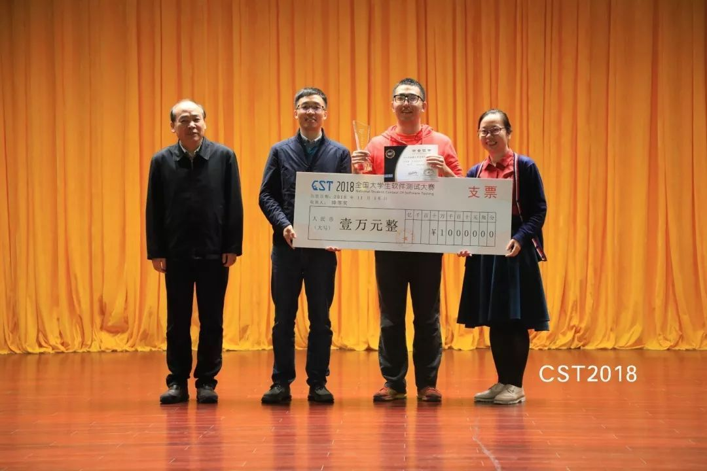

Automated Program RepaIr and MaintEnance Lab (A-PRIME)
Address: 1088 Xueyuan Avenue, Shenzhen 518055, P.R. China
Principal Investigator: Shin Hwei Tan

|

|
My current research group (June 2019) | My previous research group (March 2019) |
Advisor for Women in Engineering | |

|

|
First meeting for Women in Engineering in SUSTECH | Giving a talk titled "Tips in writing papers in Latex" (April 2019) |
Students' Awards | |
Awards display Rack | Third prize in SRC Student Research Competition at ICSE 2019 |
Coach for Software Testing Contest | |
|  | |
Grand Prize in National Student Contest of Software Testing | First Prize in National Student Contest of Software Testing |